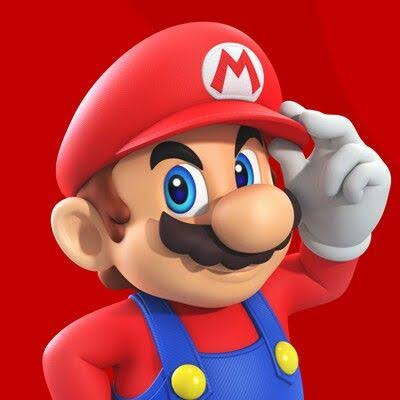

Mario Bros
The Origins: From Carpenter to Plumber
Following his breakout appearance as "Jumpman" in the 1981 arcade game Donkey Kong, creator Shigeru Miyamoto decided to give the character his own dedicated spin-off series. Stripping away his original carpenter background, Miyamoto reinvented him as a New York City plumber and introduced a green-clad twin brother, creating an iconic duo that would go on to build the highest-grossing video game franchise of all time.

- The Name Change: Jumpman was officially renamed "Mario" by Nintendo of America staff during the localization of the original arcade game, naming him after their headstrong warehouse landlord, Mario Segale.
- The Birth of Luigi: Introduced in the 1983 arcade game Mario Bros., Luigi was created to allow for simultaneous two-player cooperative play; his name was a nod to a popular pizza parlor near Nintendo's American headquarters called "Mario & Luigi's," which also happened to sound like the Japanese word "ruigi," meaning "similar."
- The Design Constraints: Mario's iconic visual look was entirely dictated by the extreme limitations of early 8-bit sprite design; he was given a mustache because mouths were too small to render, a cap so developers didn't have to animate hair movement, and bright overalls to make his arm motions clearly visible against dark backgrounds.
Chronological Eras & Evolution
The Arcade and NES Foundations (1983–1990)
Key Titles: Mario Bros. (1983), Super Mario Bros. (1985), Super Mario Bros. 3 (1988)
- Established the core rules of the Mushroom Kingdom, including power-ups like the Super Mushroom, Fire Flower, and Super Star.
- Super Mario Bros. single-handedly revived the North American video game industry following the devastating retail crash of 1983, selling over 40 million copies on the NES.
- Introduced a massive recurring cast of characters, including Princess Peach, Bowser, Toad, and the Koopa Troopas.
The 16-Bit and Yoshi Era (1990–1995)
Key Titles: Super Mario World (1990), Super Mario Kart (1992), Super Mario World 2: Yoshi's Island (1995)
- Showcased the advanced visual capabilities of the Super NES, introducing complex layer scrolling, spin jumps, and item storage mechanics.
- Introduced the dinosaur companion Yoshi, who quickly became a core mascot for the company and spawned his own spin-off franchise.
- Launched the wildly successful Mario Kart spin-off series, proving the characters could transcend the traditional platforming genre into racing and sports.
The 3D Revolution (1996–2006)
Key Titles: Super Mario 64 (1996), Luigi's Mansion (2001), Super Mario Sunshine (2002)
- Pioneered the standard for modern 3D camera movement and analog stick control in video games, shifting the series' focus from linear left-to-right goals to open-ended exploration.
- Gave Luigi his first major solo starring role in Luigi's Mansion, officially establishing his distinct, cowardly-yet-brave personality.
- Brought permanent voice acting to the brothers, cementing Charles Martinet's enthusiastic, high-pitched Italian accents as the definitive voices of the characters for over two decades.
The Modern Era (2007–Present)
Key Titles: Super Mario Galaxy (2007), Super Mario Odyssey (2017), Super Mario Bros. Wonder (2023)
- Pushed creative boundaries by introducing gravity-defying planetary physics, capture mechanics via Mario's living hat Cappy, and reality-bending Wonder Effects.
- Expanded the brand into an all-encompassing multimedia empire, culminating in massive global box office success with The Super Mario Bros. Movie and the opening of physical theme parks.
- Continued to alternate between grand, open-world 3D adventures and classic, side-scrolling 2D multiplayer experiences for modern audiences.